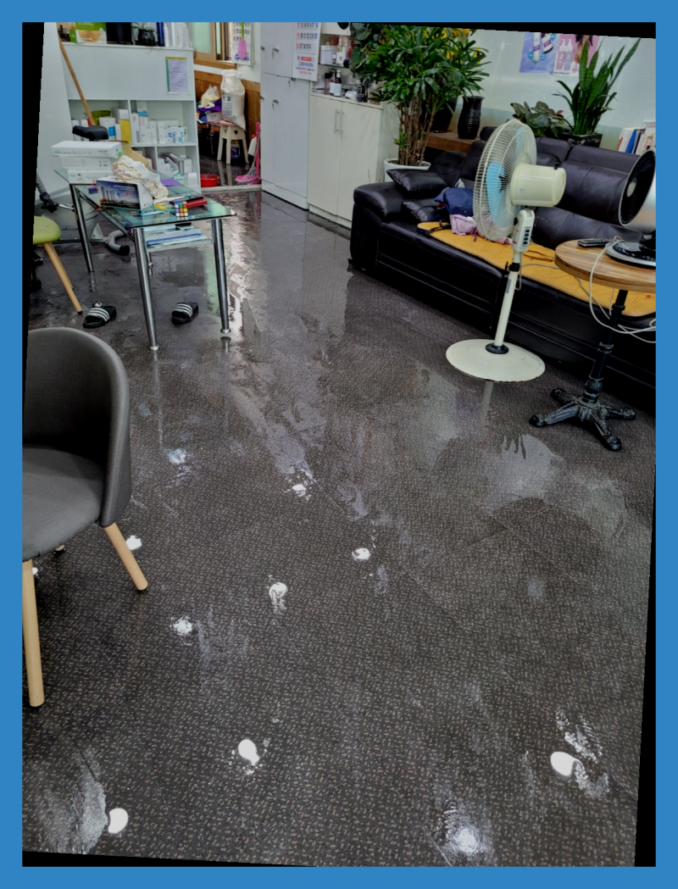
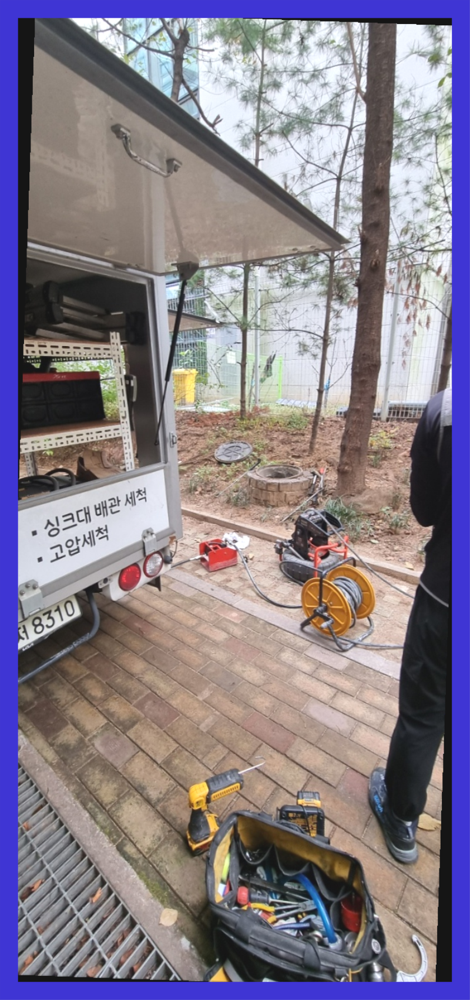
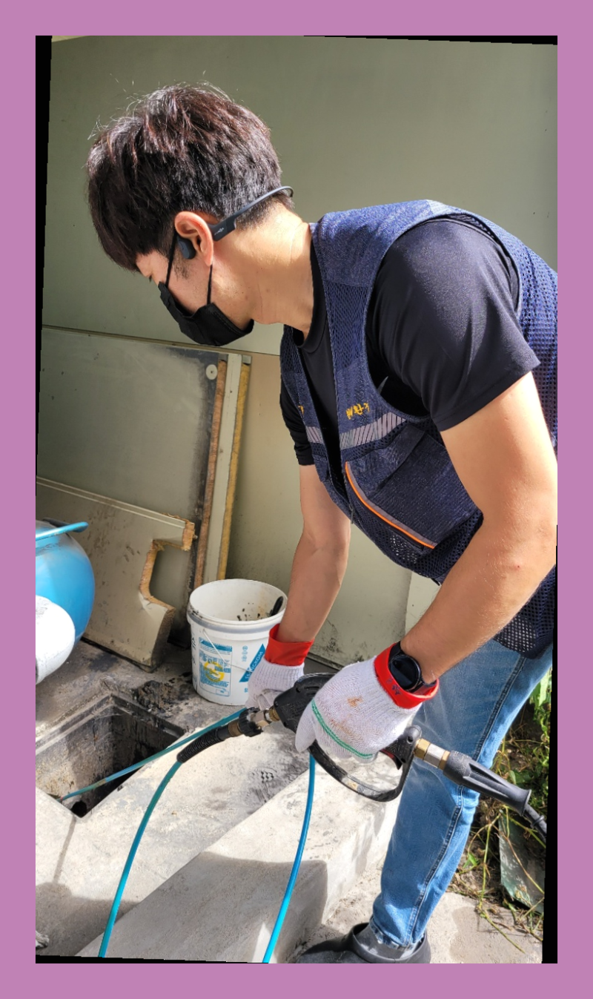
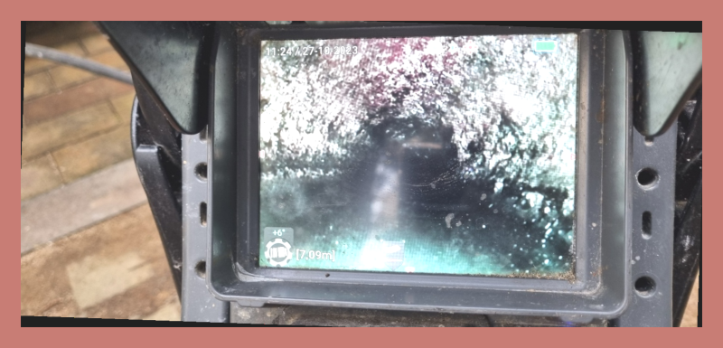
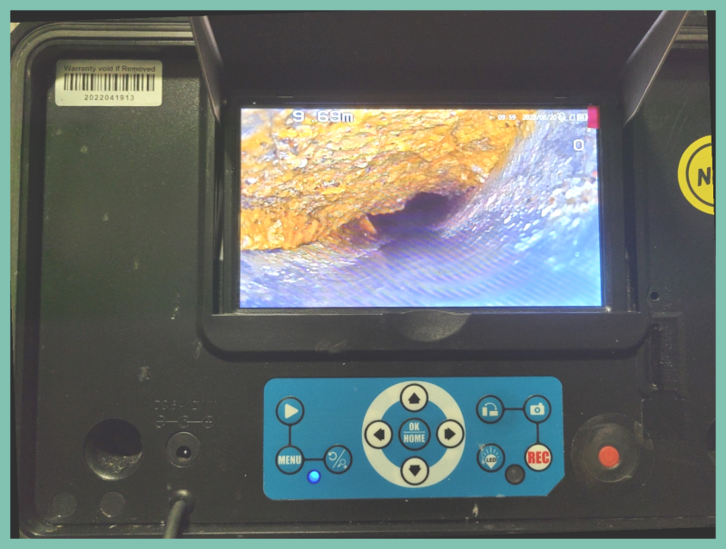
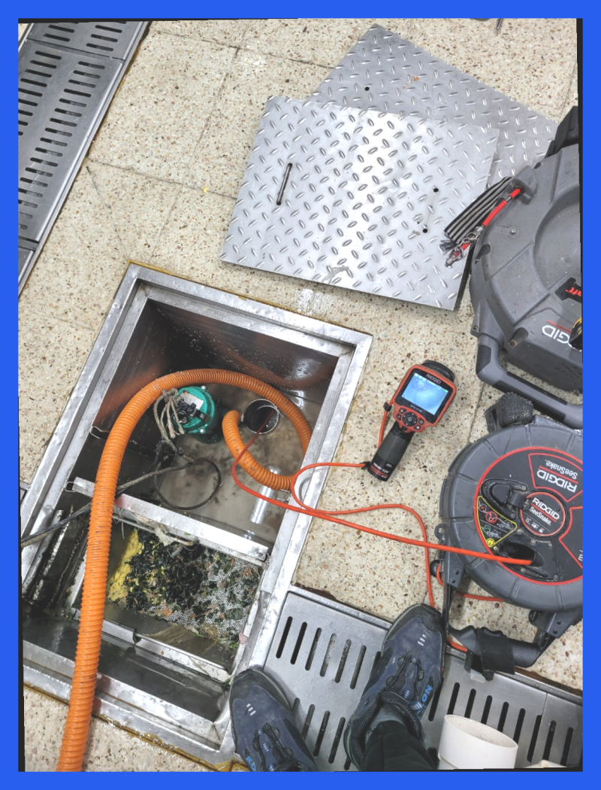

🏠 처인구 모현읍 맨홀역류 포곡 하수도뚫음 배관공사 설비
용인 처인구 싱크대막힘 전문 시공 후기

📋 작업 개요
- 위치: 용인 처인구, 처인구, 용인
- 서비스 유형: 싱크대막힘, 변기막힘, 하수구막힘, 배관막힘, 맨홀막힘, 누수수리, 역류해결, 뚫는업체, 배관청소, 고압세척, 설비공사
- 작업 일시: 2024. 3. 27. 12:07
- 업체명: 하수구수사대 (010-5615-2118)
🔍 문제 상황
반갑습니다!
설비전문업체 "하수구수사대"를 찾아주셔서 감사드립니다.
안녕하세요! 어디든 상관없이 배수관막힘 현장이라면 로켓방문 출동으로 누구보다 신속하고 정확하게 속시원히 뚫어드리겠습니다.
만약 하수도배관 이물질이 없다면 작업할 곳에 약 5cm의 오차 범위 내에서 정확한 위치 파악이 가능합니다. 위치를 파악하고서는 바로 작업을 시작하지요. 이물질로 가득했던 배관에 물길을 터주기 위한 작업을 진행했는데요, 타공을 할 때에는 하수도배관 상태를 고려해야 한답니다.
🔎 원인 분석
💡 전문가 진단: 처인구 모현읍 맨홀역류 포곡 하수도뚫음 배관공사 설비
처인구 모현읍 맨홀역류 포곡 하수도뚫음 배관공사 설비
하수도배관의 내부 상태를 확인하기 위해 내시경을 사용합니다. 이를 통해 하수도배관의 상태를 정확히 파악하고 적절한 대응을 합니다. 고압 세척과 플렉스 샤프트를 사용하여 변기 청소를 진행하며, 필요 없는 경우에는 아랫층 천장으로의 누수 문제를 방지합니다.
무엇으로 배수가 막혔는지 찾았다면 본격적으로 뚫음을 시도합니다. 일반적으로 막혔을경우 흡입기계를 활용해 찌꺼기를 끌어올립니다. 완전히 막혀있을시에는 플렉스샤프트를 이용하여 제거해줍니다. 식당배수 혹은 가정집 이외에 야외멘홀 단독주택으로 이뤄진 공간은 수압이 강한 고압세척을 사용합니다.
대부분의 이물질은 기름때로 인해 생기지만 물티슈,머리카락 등등 다향한 이물질 또는 노후된 배관으로 인해 문제가 되는 경우도 있어서 장비와 실력이 출중한 배수구전문업체를 통해서 해결해 보시기 바랍니다.
전문업체가 아니라면 대부분 스프링 장비만 들고 방문하여 배수구막힘 배관에 작은 구멍만 내고 울을 틀어 내려가니 비용만 받고 갈 텐데요 전문업체는 말로 뚫렸다고 하지않습니다. 막힌 원인부터 내시경으로 찾아내고 전문장비로 완벽하게 뚫어내는 과정을 내시경을 보여드립니다.

🔧 작업 과정
이러한 것들로 인하여 물이 내려가는 속도가 더뎌지고 결국 막혀버리는 상황까지 이르게 됩니다. 더 이상은 배관막힘 걱정없이 안심하고 싱크대를 이용하실 수 있습니다.
그러니 너무 걱정하지 않으셔도 됩니다. 이번 고객님도 오래된 건물에 살고 있다 보니 금방 또 퇴수구가 막혀버릴까 봐 걱정하셨는데요. 사후 서비스에 대해서 안내를 드리며 안심시켜 드렸답니다. 그렇게 퇴수구문제 탐지를 진행하는 중에 기름 슬러지가 많다는 것을 파악했죠.
부드럽게 풀어진 이물질은 고출력 흡입 장비를 통해 모두 빨아들였고 몇 분간 물을 흘려보내면서 하수도배수관으로 물이 잘 흘러가는지 점검해 주었습니다. 장비가 닿지 않는 부분은 용액과 온수를 흘려보내는 작업으로 청소해 주고 외부로 연결되는 하수도배수관까지 추가 점검도 해드렸습니다.
배수관이막혀버렸거나 쓰지못하게됐을때 외면하게되시면 안좋은문제가 일어나는데요.퇴수구막힘을 생각외로대부분의 사람들이대강뚫고 하루하루지나게되면 심각하지않겠지라는 판단하시고 내버려두시는일이 매우많이있습니다.
막힌 부분을 뚫고 하수도 통수로 배관 청소까지 한 다음 안을 다시 고화질 카메라로 확인해 보면 이물질이 완벽히 제거된 것을 보실 수 있습니다.
주방배수관 배관에 쌓인 이물질이 오랫동안 머물면 단단하게 굳어 약품으로는 제거가 되지 않습니다. 그래서 또 다시 배수관막힘이 반복적으로 발생합니다. 하수구청소 전문가는 최첨단 전문장비로 배수관막힘 원인을 확실하게 파악하고 근본적인 원인을 없애 해결해드리고 있습니다.
그래서 전문설비업체의 도움이 꼭 필요한 것입니다. 확실하지 않은 이유와 장비로 뚫으려고 한다면 상황은 더 악화되며 배관막힘이 심해지고 해결이 된다는 보장도 없지만 처음부터 전문 장비의 도움을 받으며 작업하게 되면 빠른 뚫음은 물론이거니와 막힌 변기도 바로 시원하게 사용이 가능해질 테지요.
의뢰하기 전에 걱정하실 만한 것은 아마 배수관뚫는 금액 부분일 것입니다. 얼마가 필요할지 가늠이 안되는데 의뢰하기에는 겁이 나기 때문에 멈칫하실 수 있으십니다. 이를 알기에 유선상으로 안내해 드립니다.


✅ 작업 완료
30분~1시간 안팎으로 달려갈 수 있으니까 막혀서 사용이 불가능하다면 전화부탁드리며 빠르게 달려가서 해결해드리겠습니다. 언제든지 상담가능합니다.
#하수구막힘 #하수구뚫음 #하수구역류 #씽크대막힘 #싱크대역류 #오수관막힘 #하수구청소 #욕실하수구막힘 #변기막힘 #하수구뚫는비용 #싱크대수리 #화장실막힘




⚠️ 베란다 누수 및 방수 관리 방법
- ✅ 비가 많이 올 때 창틀 주변이나 아래층 천장에 얼룩이 생기는지 정기적으로 확인해 보세요.
- ✅ 우수관 주변 실리콘 마감이 들뜨거나 깨진 틈새가 있는지 손상 여부를 수시로 체크하세요.
- ✅ 베란다 바닥 타일의 줄눈(메지)이 소실되면 그 틈으로 물이 침투하여 누수가 유발됩니다.
- ✅ 누수 의심 증상 발견 시 방치하면 아래층 손실이 커지므로 즉시 전문가의 진단을 받으십시오.
💡 핵심 정리
- 확실한 장비 작업(내시경 점검 및 샤프트 스케일링)으로 원인을 뿌리 뽑습니다.
- 작업 후 1년 이내에 동일한 부위 재발 시 100% 무상 A/S 서비스를 보장합니다.
- 서울 · 경기 · 인천 전 지역에 24시간 언제든 긴급 출동할 수 있도록 항시 대기 중입니다.
❓ 자주 묻는 질문 (FAQ)
🚨 용인 처인구 싱크대막힘 문제로 고민이신가요?
정확한 원인 진단과 확실한 시공으로 재발 없는 해결을 약속드립니다.
24시간 긴급 출동 | 서울 · 경기 · 인천 전지역 | 1년 내 재발 시 무상 A/S